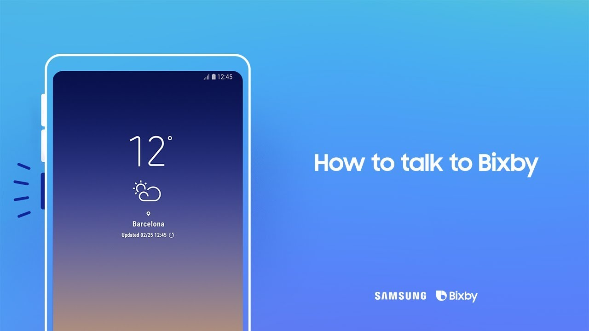
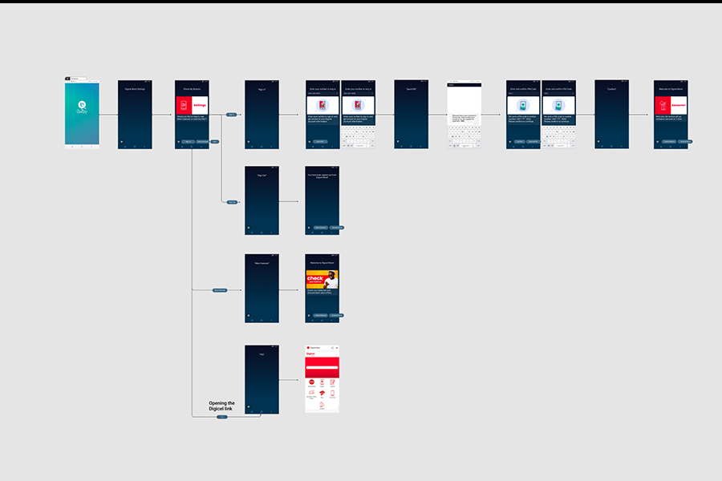

-

What is Bixby?
On 20 March 2017, Samsung announced the voice-powered digital assistant named "Bixby". Bixby was introduced alongside the Samsung Galaxy S8 and S8+, as well as the Samsung Galaxy Tab A during the Samsung Galaxy Unpacked 2017 event, which was held on 29 March 2017. Samsung officially unveiled Bixby a week before launch but it only made its first appearance during the event. Bixby can also be sideloaded on older Galaxy devices running Android Nougat. Bixby represents a major reboot for S Voice, Samsung's voice assistant app introduced in 2012 with the Galaxy S III. In May 2017, Samsung announced that Bixby would be coming to its line of Family Hub 2.0 refrigerators, making it the first non-mobile product to include the virtual assistant. In October 2017, Samsung announced the release of Bixby 2.0 during its annual developer conference in San Francisco. The then-new version was rolled out across the company’s line of connected products, including smartphones, TVs and refrigerators. Also, third parties are allowed to develop applications for Bixby using the Samsung Developer Kit
"Bixby Voice" is the name for the method of activating Bixby by calling it or doing a long press of the Bixby Button located below the volume rocker. A while before the phone's release, the Bixby Button was reprogrammable and could be set to open other applications or assistants, such as Google Assistant. However, near the phone's release this ability was removed with a firmware update, but can be remapped using third-party apps. "Bixby Vision" is an augmented reality camera that can identify objects in real-time and potentially offer the user to purchase them online, translate text, read QR codes, and recognize landmarks. "Bixby Home" is a vertically scrolling list of information that Bixby can interact with,[clarification needed] for example weather, fitness activity and buttons for controlling their smart home gadgets. At the beginning Bixby supported three languages: English, Korean and Chinese. It also supports contextual search and visual search.
-

Voice Activated Chat-bot
I had the pleasure of working together with a design team from Samsung to develop a voice activated chat-bot that can be directly integrated with one of our customer's APIs to deliver different useful information about their tarif plans, existing balance or even the posibility of buying and topping up their number using Bixby, Samsung's virtual assistant.
Go Back
Get In Touch
Please don't hesitate to contact me if you need help improving the UX of your product or if you would like to collaborate on future projects.
Contact Me